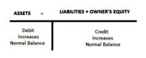
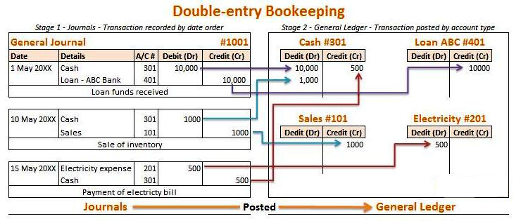
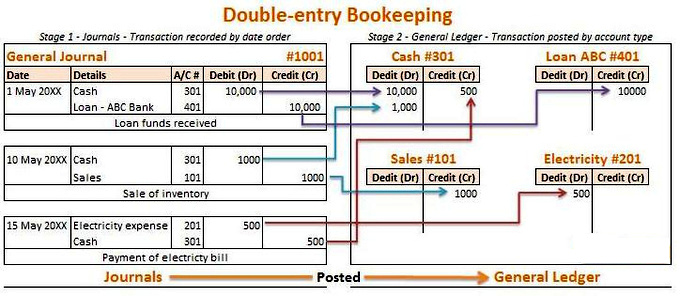
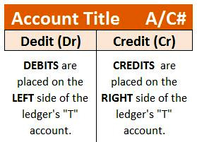
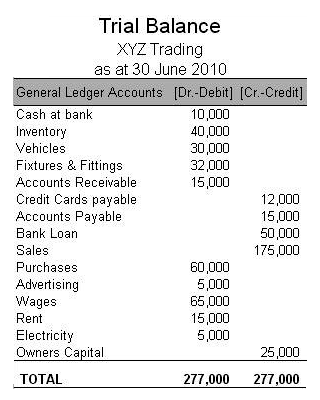
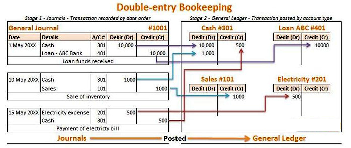

Important terminology in accounting includes cash vs. accrual basis, assets, liabilities, and equity.
Distinguish between the two primary accounting methods
There are two primary accounting methods - cash basis and accrual basis. The cash basis of accounting, or cash receipts and disbursements method, records revenue when cash is received and expenses when they are paid in cash. In contrast, the accrual method records income items when they are earned and records deductions when expenses are incurred, regardless of the flow of cash. Accrual accounts include, among others, accounts payable, accounts receivable, goodwill, deferred tax liability and future interest expense.
The term accrual is also often used as an abbreviation for the terms accrued expense and accrued revenue. Accrued revenue (or accrued assets) is an asset, such as unpaid proceeds from a delivery of goods or services, when such income is earned and a related revenue item is recognized, while cash is to be received in a later period, when the amount is deducted from accrued revenues. An example of an accrued expense is a pending obligation to pay for goods or services received from a counterpart, while cash is to be paid out in a latter accounting period when the amount is deducted from accrued expenses.
In financial accounting, assets are economic resources. Anything capable of being owned or controlled to produce value is considered an asset. Simply stated, assets represent value of ownership that can be converted into cash. Two major asset classes are intangible assets and tangible assets. Intangible assets are identifiable non-monetary assets that cannot be seen, touched or physically measured, are created through time and effort, and are identifiable as a separate asset. Tangible assets contain current assets and fixed assets. Current assets include inventory, while fixed assets include such items as buildings and equipment.
A liability is an obligation of an entity arising from past transactions, the settlement of which may result in the transfer of assets, provision of services, or other yielding of economic benefits in the future. A liability is defined by the following characteristics:
In accounting and finance, equity is the residual claim or interest of the most junior class of investors in assets after all liabilities are paid. If liability exceeds assets, negative equity exists. In an accounting context, shareholders' equity represents the remaining interest in assets of a company, spread among individual shareholders in common or preferred stock.
Credit and debit are the two fundamental aspects of every financial transaction in the double-entry bookkeeping system.
Define how the terms debit and credit are used in accounting
The difficulty with accounting has less to do with the math as it does with its concepts. There is no more difficult yet vital concept to understand than that of debits and credits. Debits and credits are at the heart of the double-entry bookkeeping system that has been the foundation stone on which the financial world's accounting system has been built for well over 500 years. Given the length of time, is it any wonder that confusion has surrounded the concept of debits and credits? The English language and its laws have morphed to bring new definitions for two words that, in the accounting world, have their own significance and meaning.
For a better conceptual understanding of debits and credits, let us look at the meaning of the original Latin words. The English translators took theirs word credit and debit from the Latin words credre and debere, respectively. Credre means "to entrust," and debere means "to owe. " When we look closely into these two concepts we see that they are actually two sides of the same coin. In a closed financial system, money cannot just materialize. If money is received by someone it must have come from someone. That is, if someone entrusts an amount of money to someone else, then that person receiving the entrusted money would owe the same amount of money in return (i.e., the credre must equal the debere).
Debits and credits serve as the two balancing aspects of every financial transaction in double-entry bookkeeping. Debits are entered on the left side of a ledger, and credits are entered on the right side of a ledger. Whether a debit increases or decreases an account depends on what kind of account it is. In the accounting equation Assets = Liabilities + Equity, if an asset account increases (by a debit), then one must also either decrease (credit) another asset account or increase (credit) a liability or equity account.
Another way to help remember debit and credit rules, is to think of the accounting equation as a tee (T), the vertical line of the tee (T) goes between assets and liabilities. Everything on the left side (debit side) increases with a debit and has a normal debit balance; everything on the right side (credit side) increases with a credit and has a normal credit balance. (Note: a normal balance does not always mean the accounts balance will be on that side, it's simply a way of remembering which side increases it).

The extended accounting equation allows for revenue and expenses as well.
As you already know the first part of the equation, let's focus on the new classifications, revenue and expenses.
Each transaction (let's say \$100) is recorded by a debit entry of \$100 in one account, and a credit entry of \$100 in another account. When people say that "debits must equal credits" they do not mean that the two columns of any ledger account must be equal. If that were the case, every account would have a zero balance (no difference between the columns), which is often not the case. The rule that total debits equal the total credits applies when all accounts are totaled.
It is important for us to consider perspective when attempting to understand the concepts of debits and credits. For example, one credit that confuses most newcomers to accounting is the one that appears on their own bank statement. We know that cash in the bank is an asset, and when we increase an asset we debit its account. Then how come the credit balance in our bank accounts goes up when we deposit money? The answer is one that is fundamental to the accounting system. Each firm records financial transactions from their own perspective.
Think about the bank's perspective for a moment. How do they view the money we have just deposited? Whose money is it? It's ours; therefore, from the bank's perspective the deposit is viewed as a liability (money owed by the bank to others). When we deposit money into our accounts, the bank's liability increases, which is why the bank credits our account.
In summary: An increase (+) to an asset account is a debit and an increase (+) to a liability account is a credit; conversely, a decrease (-) to an asset account is a credit and a decrease (-) to a liability account is a debit.
What is debited and credited is also a matter of transaction type. In accounting, these are divided into three types of accounts. The rule of debit and credit depends on the type of account you are talking about:
Debit and credit rules
To ensure that a company is "in balance," its assets must always equal its liabilities plus its owners' equity.
State the fundamental accounting equation
The fundamental accounting equation can actually be expressed in two different ways. A double-entry bookkeeping system involves two different "columns;" debits on the left, credits on the right. Every transaction and all financial reports must have the total debits equal to the total credits. A mark in the credit column will increase a company's liability, income and capital accounts, but decrease its asset and expense accounts. A mark in the debit column will increase a company's asset and expense accounts, but decrease its liability, income and capital account.
For example, if a person buys a computer for \$945. He borrows \$500 from his best friend and pays for the rest using cash in his bank account. To record this transaction in his personal ledger, the person would make the following journal entry.
Computer (Increase in asset) \$945
Cash (Decrease in an asset) \$445
Loan from friend (Increase in debt) \$500
As you can see, the total amount of the debits (the amount on the left) equal the credits (the total amount on the right). The transaction is in "balance. "
An extension of that basic rule involves the balance sheet. The total assets listed on a company's balance sheet must equal the company's total liabilities, plus its owners' equity in the company. This identity reflects the assumption that all of a company's assets are either financed through debt or through the contribution of funds by the company's owners.
A simple balance sheet example:
Assets
Cash \$100,000
PP&E \$200,000
Liabilities & Equity
Mortgage \$150,000
Equity \$150,000
As you can see, the business's total assets equal the company's total liabilities and equity. This company is "balanced. "
Preparing financial statements requires preparing an adjusted trial balance, translating that into financial reports, and having those reports audited.
Demonstrate how to prepare the financial statements
When a business enterprise presents all the relevant financial information in a structured and easy to understand manner, it is called a financial statement. The purpose of financial statements are to provide both business insiders and outsiders a concise, clear picture of the current financial status in the business. Therefore, the people who use the statements must be confident in its accuracy.
The process of preparing the financial statements begins with the adjusted trial balance. Preparing the adjusted trial balance requires "closing" the book and making the necessary adjusting entries to align the financial records with the true financial activity of the business.
Closing the books is simply a matter of ensuring that transactions that take place after the business's financial period are not included in the financial statements. For example, assume a business is preparing its financial statements with a December 31st year end. It acquires some property on January 14th. If the books are properly closed, that property will not be included on the balance sheet that is being prepared for the period on December 31st.
An adjusting entry is a journal entry made at the end of an accounting period that allocates income and expenditure to the appropriate years. Adjusting entries are generally made in relation to prepaid expenses, prepayments, accruals, estimates and inventory. Throughout the year, a business may spend funds or make assumptions that might not be accurate regarding the use of a good or service during the accounting period. Adjusting entries allow the company to go back and adjust those balances to reflect the actual financial activity during the accounting period.
For example, assume a company purchases 100 units of raw material that it expects to use up during the current accounting period. As a result, it immediately expenses the cost of the material. However, at the end of the year the company discovers it only used 50 units. The company must then make an adjusting entry to reflect that, and decrease the amount of the expense and increase the amount of inventory accordingly.
Using the trial balance, the company then prepares the four financial statements. These statements are:
The company may also provide Notes to the Financial Statements, which are disclosures regarding key details about the company's operations that may not be evident from the financial statements.
Once the company prepares its financial statements, it will contract an outside third party to audit it. An audit is an independent review and examination of records and activities to assess the adequacy of system controls, to ensure compliance with established policies and operational procedures, and to recommend necessary changes in controls, policies, or procedures. It is the audit that assures outside investors and interested parties that the content of the statements are correct.
When an audit is completed, the auditor will issue a report with the findings. The findings can state anything from the statements are accurate to statements are misleading. To ensure a positive reports, some companies try to participate in opinion shopping. This is the process that businesses use to ensure it gets a positive review. Since Enron and the accounting scandals of the early 2000s, this practice has been prohibited.
Transactions include sales, purchases, receipts, and payments made by an individual or organization.
Distinguish between the four transactions that occur in the accounting cycle
Transactions include sales, purchases, receipts, and payments made by an individual or organizations.
A sale is a transfer of property for money or credit. Revenue is earned when goods are delivered or services are rendered. In double-entry bookkeeping, a sale of merchandise is recorded in the general journal as a debit to cash or accounts receivable and a credit to the sales account. The amount recorded is the actual monetary value of the transaction, not the list price of the merchandise. A discount from list price might be noted if it applies to the sale. Fees for services are recorded separately from sales of merchandise, but the bookkeeping transactions for recording sales of services are similar to those for recording sales of tangible goods .
Purchasing refers to a business or organization acquiring goods or services to accomplish the goals of its enterprise. This transaction results in a decrease in the finances of the purchaser and an increase in the benefits of the sellers. Purchases can be made by cash or credit. As credit purchases are made, accounts payable will increase.
Receipts refer to a business getting paid by another business for delivering goods or services. This transaction results in a decrease in accounts receivable and an increase in cash or equivalents.
Payments refer to a business paying another business for receiving goods or services. The business that makes the payment will decrease its accounts payable as well as its cash or equivalents. On the other hand, the business that receives the payment will see a decrease in accounts receivable but an increase in cash or equivalents.
The accounting cycle is performed during the accounting period, to analyze, record, classify, summarize, and report financial information.
Identify and complete the 8 steps in the Accounting Cycle
The accounting cycle is a series of steps performed during the accounting period (some throughout the period and some at the end) to analyze, record, classify, summarize, and report useful financial information for the purpose of preparing financial statements. In bookkeeping, the accounting period is the period for which the books are balanced and the financial statements are prepared. Generally, the accounting period consists of 12 months. However, the beginning of the accounting period differs according to the company. For example, one company may use the regular calendar year, January to December, as the accounting year, while another entity may follow April to March as the accounting period.
There are eight steps in the accounting cycle and they are as follows:
To begin the accounting cycle, it is necessary to understand what constitutes a business transaction. Business transactions are measurable events that affect the financial condition of a business. Business transactions can be the exchange of goods for cash between the business and an external party, such as the sale of a book, or they can involve paying salaries to employees. These events have one fundamental thing in common: they have caused a measurable change in the amounts in the accounting equation, assets = liabilities + stockholders' equity. The evidence that a business event has occurred is a source document. Sales tickets, checks, and invoices are common source documents. Source documents are important because they are the ultimate proof that a business transaction has taken place.
After determining, via the source documents, that an event is a business transaction, it is then entered into the company books via a journal entry. After all the transactions for the period have been entered into the appropriate journals, the journals are posted to the general ledger . The trial balance proves that the books are in balance or that the debits equal the credits. From the trial balance, a company can prepare their financial statements. After the financials are prepared, the month end adjusting and closing entries are recorded (journalized) and posted to the appropriate accounts. After those entries are made, a post-closing trial balance is run. The post-closing trial balance verifies the debits equal the credits and that all beginning balances for permanent accounts are in place.
The General Ledger contains all entries from both the General Journal and the Special Journals.
As we walk through the steps of the accounting cycle, consider the following example. After a number of years as a successful CPA at a national firm, you decide to quit the rat race and pursue your true love -- yoga. You decide that Atlanta's Virginia-Highland neighborhood would be the perfect place to open an Ashtanga Yoga studio. Even better, your friend Solomon, a certified instructor, has just moved to town and is willing to teach at the studio. You hurriedly prepare to open the studio, Highland Yoga, by July 1.
Pre-opening (before July 1)
Prior to opening the business, you make the following transactions:
1. You contribute \$4,000 in cash to start the business.
2. You purchase \$500 worth of mats and other equipment for use during classes.
3. You purchase an additional \$400 worth of mats, equipment, and clothing for sale at the studio.
4. You purchase liability insurance at a total cost of \$1,200. The policy covers July 1 through December31.
July
The following transactions take place during July.
1. You receive cash totaling \$800 for classes.
2. Your instructor teaches classes for the month. You agree to pay \$600 for the classes; \$300 is paid on July 15, and \$300 will be paid on August 3.
3. You pay rent for July of \$1,000 on July 1.
4. You use utilities (electricity and water) totaling \$200. This amount is payable on August 15.
August
The following transactions take place during August.
1. You receive \$1,500 in cash for classes. Of this amount, \$1,000 was for classes in August. The remainder is for 2-month passes allowing unlimited classes in August and September.
2. Your instructor again earns \$600 teaching classes; \$300 due on August 16 and \$300 on September 1.
3. Utilities total \$150, payable September 15.
4. You pay rent of \$1,000 on August 1.
5. You sell inventory costing \$150 for a revenue of \$225.
6. You are worried about money, so your Uncle Rafael makes you an offer. He agrees to loan you \$2,000 in cash. You will need to repay him sometime later, but he doesn't say when.
7. A client is extremely dissatisfied with their class, and demands their money back. Reluctantly, you agree. The class cost \$15.
8. After borrowing money, you decide to withdraw some of your investment in the studio to pursue other opportunities. You decide to withdraw \$1,000.
All business transactions must be recorded to the proper journal by double-entry book keeping.
Explain why the double entry system is used in accounting and the proper use of a T-account
Journal entries are business transactions that cause a measurable change in the accounting equation.
(Assets = Liabilities + Stockholders' Equity)
Since business transactions always generate documentation, it is the accountant or bookkeeper's job to analyze the source document to determine whether a journal entry is necessary. Source documents are important because they are the ultimate proof of business transactions. Some examples of source documents include bills received from suppliers for goods or services received, bills sent to customers for goods sold or services performed, and cash register tapes. Each source document is analyzed to determine whether the event caused a measurable change in the accounting equation. If it has, then it is necessary to prepare and record a journal entry in the proper account.
An account is the part of the accounting system used to classify and summarize the increases, decreases, and balances of each asset, liability, stockholders' equity item, dividend, revenue, and expense. Firms set up accounts for each different business element, such as cash, accounts receivable, and accounts payable. Individual companies may label their accounts differently.
All accounts have corresponding contra accounts depending on what transaction has taken place; i.e., when a vehicle is purchased using cash, the asset account "Vehicles" is debited as the vehicle account increases, and simultaneously the asset account "Bank" is credited due to the payment of the vehicle using cash. Some balance sheet items have corresponding contra accounts, with negative balances, that offset them. Examples are accumulated depreciation against equipment, and allowance for bad debts against long-term notes receivable.
The General Ledger contains all entries from both the General Journal and the Special Journals. Using a double entry system to record transactions keeps the accounts in balance.
The accounting requirement that each transaction be recorded by an entry that has equal debits and credits is called double-entry procedure. This double-entry procedure keeps the accounting equation in balance. For each business transaction recorded, the total dollar amount of debits must equal the total dollar amount of credits. If one account (or accounts) is debited for \$100, then another account (or accounts) must be credited for the same amount.
The general ledger of all accounts is, simply, a comprehensive collection of T-accounts -- so called because there is a vertical line in the middle of each ledger page and a horizontal line at the top of each ledger page, like a large letter T. The account title will appear above the horizontal line, and debits and credits will appear to the left and right of the vertical line, respectively.
Some typical accounts and their normal balances:
Assets Debit
Contra Asset Credit
Liability Credit
Contra Liability Debit
Owner's Equity Credit
Stockholder's Equity Credit
Revenue Credit
Contra Revenue Debit
Expenses Debit
Gains Credit
Losses Debit
T-accounts are so named because of their "T" shape, with the name of the account on top, and debits and credits on the left and right, respectively.
An account's normal balance will be the side on which increases are recorded. For example, assets and expenses normally have debit balances, and liabilities and revenues normally have credit balances.
Continuing our example, how would we recognize and record the transactions involved in running our yoga studio?
Pre-opening
Prior to opening the business, you make the following transactions:
1. You contribute \$4,000 in cash to start the business.
Cash 4,000, Contributed Capital 4,000; Assets(+)=Equity(+)
2. You purchase \$500 worth of mats and other equipment for use during classes.
Cash -500, PPE 500; Assets(+), Assets(-)=0
3. You purchase an additional \$400 worth of mats, equipment, and clothing for sale at the studio.
Cash -400, Inventory 400; Assets(+), Assets(-)=0
4. You purchase liability insurance at a total cost of \$1,200. The policy covers July 1 through December31.
Cash -1,200, Prepaid Insurance 1,200; Assets(+), Assets(-)
July
The following transactions take place during July.
1. You receive cash totaling \$800 for classes.
Cash 800, Service Revenue 800; Assets(+)= Equity(+)
2. Your instructor teaches classes for the month. You agree to pay \$600 for the classes; \$300 is paid on July 15, and \$300 will be paid on August 3.
Cash -300, Wage Payable 300, Instructor Expense 600; Assets(-300)=Liabilities(+300)+Equity(-600)
3. You pay rent for July of \$1,000 on July 1.
Cash -1,000, Rent Expense 1,000; Assets(-)=Equity(-)
4. You use utilities (electricity and water) totaling \$200. This amount is payable on August 15.
Utility Payable 200, Utility Expense 200; Liability(+)+Equity(-)=0.
August
The following transactions take place during August.
1. You receive \$1,500 in cash for classes on August 1. Of this amount, \$1,000 is for an initiation fee. The remainder is for 2-month passes allowing unlimited classes in August and September.
Cash 1,500, Unearned Revenue 500, Service Revenue 1,000; Assets(+1,500)=Liability(+500)+Equity(+1,000)
2. Your instructor again earns \$600 teaching classes; \$300 due on August 16 and \$300 on September 1.
Cash -300, Wage Payable 300, Instructor Expense 600; Assets(-300)=Liabilities(+300)+Equity(-600)
3. Utilities total \$150, payable September 15.
Utility Payable 150, Utility Expense 150; Liability(+)+Equity(-)=0
4. You pay rent of \$1,000 on August 1.
Cash -1,000, Rent Expense 1,000; Assets(-)=Equity(-)
5. You sell inventory costing \$150 for a revenue of \$225.
a. Cash 225, Sales Revenue 225; Assets(+)=Equity(+)
b. Inventory -150, Cost of Goods Sold 150; Assets(-)=Equity(-)
6. You are worried about money, so your Uncle Rafael makes you an offer. He agrees to loan you \$2,000 in cash. You will need to repay him sometime later, but he doesn't say when.
Cash 2,000, Loan Payable 2,000; Assets(+)=Liabilities(+)
7. A client is extremely dissatisfied with their class, and demands their money back. Reluctantly, you agree. The class cost \$15.
Cash -15, Service Revenue -15; Assets(-)=Equity(-)
8. After borrowing money, you decide to withdraw some of your investment in the studio to pursue other opportunities. You decide to withdraw \$1,000.
Cash -1,000, Contributed Capital -1,000; Assets(-)=Equity(-)
Items are entered into the general journal or the special journals via journal entries, also called journalizing.
Explain the correct procedure for making a journal entry in the General or Special Journal.
The general journal is where double entry bookkeeping entries are recorded by debiting one or more accounts and crediting another one or more accounts with the same total amount. The total amount debited and the total amount credited should always be equal, thereby ensuring the accounting equation is maintained.
Depending on the business's accounting information system, specialized journals may be used in conjunction with the general journal for record-keeping. In such case, use of the general journal may be limited to non-routine and adjusting entries
Special journals are designed to facilitate the process of journalizing and posting transactions. They are used for the most frequent transactions in a business. For example, in merchandising businesses, companies acquire merchandise from vendors and then in turn sell the merchandise to individuals or other businesses. Sales and purchases are the most common transactions for merchandising businesses. A business like a retail store will record the following transactions many times a day for sales on account and cash sales.
Items are entered the general journal or the special journals via journal entries, or journalizing. Journal entries are prepared after examining the source document to see if a business transaction has taken place. If a business transaction has taken place, that is a transaction that causes a measurable change in the accounting equation then a journal entry is necessary . Each journal entry must have a debit and a credit. Journal entries also include the date of the transaction, titles of the accounts debited and credited (credited account is indented several spaces), the amount of each debit and credit; and an explanation of the transaction also known as a Narration.
Consider our example for the yoga studio. How would we record journal entries for each transaction?
Pre-opening
Prior to opening the business, you make the following transactions:
1. You contribute \$4,000 in cash to start the business.
Cash 4,000
Contributed capital 4,000
2. You purchase \$500 worth of mats and other equipment for use during classes.
PPE 500
Cash 500
3. You purchase an additional \$400 worth of mats, equipment, and clothing for sale at the studio.
Inventory 400
Cash 400
4. You purchase liability insurance at a total cost of \$1,200. The policy covers July 1 through December31.
Prepaid insurance 1,200
Cash 1,200
July
The following transactions take place during July.
1. You receive cash totaling \$800 for classes.
Cash 800
Revenue 800
2. Your instructor teaches classes for the month. You agree to pay \$600 for the classes; \$300 is paid on July 15, and \$300 will be paid on August 3.
Wage expense 600
Cash 300
Wage payable 300
3. You pay rent for July of \$1,000 on July 1.
Rent expense 1,000
Cash 1,000
4. You use utilities (electricity and water) totaling \$200. This amount is payable on August 15.
Utility expense 200
Utility payable 200
August
The following transactions take place during August.
1. You receive \$1,500 in cash for classes. Of this amount, \$1,000 was for classes in August. The remainder is for 2-month passes allowing unlimited classes in August and September.
Cash 1,500
Revenue 1,250
Unearned revenue 250
2. Your instructor again earns \$600 teaching classes; \$300 due on August 16 and \$300 on September 1.
Wage expense 600
Cash 300
Wage payable 300
3. Utilities total \$150, payable September 15.
Utility expense 150
Utility payable 150
4. You pay rent of \$1,000 on August 1.
Rent expense 1,000
Cash 1,000
5. You sell inventory costing \$150 for a \$225.
Cash 225
Revenue 225
Cost of goods sold 150
Inventory 150
(these can be combined into a single entry if you choose. )
6. You are worried about money, so your Uncle Rafael makes you an offer. He agrees to loan you \$2,000 in cash. You will need to repay him sometime later, but he doesn't say when.
Cash 2,000
Loan Payable 2,000
7. A client is extremely dissatisfied with their class, and demands their money back. Reluctantly, you agree. The class cost \$15.
Revenue 15
Cash 15
or
Refund expense 15
Cash 15
8. After borrowing money, you decide to withdraw some of your investment in the studio to pursue other opportunities. You decide to withdraw \$1,000.
Contributed capital 1,000
Cash 1,000
(this cannot be a dividend, because your balance of retained earnings is negative. )
Posting is recording in the ledger accounts the information contained in the journal.
Describe how posting affects the General Journal, Special Journal and General Ledger
In accounting, each journal entry is like a set of instructions. Carrying out of these instructions is known as posting, a procedure that takes information recorded via journal entries (or journalizing) in the General or Special Journals and transfers it to the General Ledger. Each individual journal entry directs the input of a certain dollar amount as a debit in a specific ledger account, and directs the input of a certain dollar amount as a credit in a specific ledger account. Posting is always from the journal to the ledger accounts, and can be done two ways: the journal entries can be posted at the time the transaction is journalized; or the posting can be done at a set time like the end of the day, week, or month. Journal entries may also be posted as the journal page is filled if using a manual accounting system as a matter of personal taste. When posting the general journal, the date used in the ledger accounts is the date the transaction was recorded in the journal, not the date the journal entry was posted to the ledger accounts.
All transactions made by the company in relation to the bond must be recorded in its general ledger. The general ledger contains all entries from both the General Journal and the Special Journals.
Since accountants and bookkeepers often need to trace the origin of a ledger entry, they use cross-indexing. In cross-indexing a notation is made for each entry that indicates which general or special journal account the general ledger entry came from. This practice makes it easy to trace an entry back to the original transaction. The account number appears in the Posting Reference column of the General Journal.
A trial balance is run during the accounting cycle to test whether the debits equal the credits.
Identify when the trial balance is performed and its purpose
During the accounting cycle, a trial balance is prepared. It is usually prepared after all the journal entries for the period have been recorded.
The trial balance tests the equality of a company's debits and credits. It lists all of the ledger, both general journal and special, accounts and their debit or credit balances to determine that debits equal credits in the recording process .
The post-closing trial balance proves debits still equal credits after the closing entries have been made.
The accounts appear in this order: assets, liabilities, stockholders' equity, dividends, revenues, and expenses. Within the assets category, the most liquid (closest to becoming cash) asset appears first and the least liquid appears last. Within the liabilities, those liabilities with the shortest maturities appear first.
If the total of the debit column does not equal the total value of the credit column then this would show that there is an error in the nominal ledger accounts. This error must be found before a profit and loss statement and balance sheet can be produced.
The trial balance is usually prepared by a bookkeeper or accountant. The bookkeeper/accountant used journals to record business transactions. The journal entries were then posted to the general ledger. The trial balance is a part of the double-entry bookkeeping system and uses the classic 'T' account format for presenting values. A trial balance only checks the sum of debits against the sum of credits. If debits do not equal credits then the accountant or bookkeeper must determine why.
In the example of Highland Yoga, the pre-opening trial balance would be calculated as follows:
1. You contribute \$4,000 in cash to start the business.
Cash 4,000, Contributed Capital 4,000; Assets(+)=Equity(+)
2. You purchase \$500 worth of mats and other equipment for use during classes.
Cash -500, PPE 500; Assets(+), Assets(-)=0
3. You purchase an additional \$400 worth of mats, equipment, and clothing for sale at the studio.
Cash -400, Inventory 400; Assets(+), Assets(-)=0
4. You purchase liability insurance at a total cost of \$1,200. The policy covers July 1 through December 31.
Cash -1,200, Prepaid Insurance 1,200; Assets(+), Assets(-)
The trial balance for debits will be:
4,000 (cash) + 500 (PPE) + 400 (inventory) + 1,200 (prepaid insurance) = 6,100
The trial balance for credits will be:
4,000 (contributed capital) + 500 (cash) + 400 (cash) + 1,200 (cash) = 6,100
The calculation will be the same for the next two periods in the example, including any necessary adjustments.
Some reasons why the general ledger may be out of balance:
When the error is found, a correcting entry must be made. Then another trial balance is run.
Adjusting entries are journal entries made at the end of an accounting period that allocate income and expenses to their proper period.
Identify the types of adjusting entries and when and why they are made
For accounting purposes, adjusting entries are journal entries made at the end of an accounting period. Adjusting entries allocate income and/or expenses to the period in which they actually occurred . The revenue recognition principle states that income and expenses must match. This is why adjusting entries need to be made under an accrual based accounting system. Based on this, revenues and associated costs are recognized in the same accounting period. However, the actual cash may be received or paid at a different time.
The General Ledger contains all entries from both the General Journal and the Special Journals.
There are several different types of adjusting entries. Each one accounts for a different situation.
Consider our yoga studio example. Some of our previously recognized transactions need to be adjusted in later periods:
a. Recognize insurance expense
Prepaid Insurance -100, Insurance Expense 100; Assets(-)=Equity(-)
b. Depreciation @ \$20/month
Accumulated Depreciation 20, Depreciation Expense 20; Assets(-)=Equity(-)
a. Recognize insurance expense
Prepaid Insurance -100, Insurance Expense 100; Assets(-)=Equity(-)
b. Depreciation @ \$20/month
Accumulated Depreciation 20, Depreciation Expense 20; Assets(-)=Equity(-)
c. Pay wages from July
Cash -300, Wage Payable -300; Assets(-), Liabilities(-)
d. Pay utilities from July
Cash -200, Utility Payable -200; Assets(-), Liabilities(-)
The journal entries to record these transactions would be as follows:
a. Expiration of insurance
Insurance expense.....................................200
-----Prepaid insurance..........................................200
b. Depreciation on studio equipment (500 for 25 months = 20/month)
Depreciation expense.................................20
-----Accumulated Depreciation.................................20
a. Expiration of insurance
Insurance expense.................................200
-----Prepaid insurance .................................200
b. Depreciation on studio equipment (500 for 25 months = 20/month)
Depreciation expense.................................20
-----Accumulated Depreciation........................20
c. Pay wage from July
Wage payable.................................300
-----Cash................................................300
d. Pay utility bill from July
Utility payable.................................200
-----Cash.................................................200
Preparing financial statements requires preparing an adjusted trial balance, translating it into financial reports, and auditing them.
Explain the necessary steps to take before preparing the financial statements and the purpose of the statements
When a business enterprise presents all the relevant financial information in a structured and easy to understand manner, it is called a financial statement. The purpose of financial statements are to provide both business insiders and outsiders a concise, clear picture of the current financial status in the business. Therefore, the people who use the statements must be confident in its accuracy.
The process of preparing the financial statements begins with the adjusted trial balance. Preparing the adjusted trial balance requires "closing" the book and making the necessary adjusting entries to align the financial records with the true financial activity of the business.
Closing the books is simply a matter of ensuring that transactions that take place after the business's financial period are not included in the financial statements. For example, assume a business is preparing its financial statements with a December 31st year end. It acquires some property on January 14th. If the books are properly closed, that property will not be included on the balance sheet that is being prepared for the period on December 31st.
An adjusting entry is a journal entry made at the end of an accounting period that allocates income and expenditure to the appropriate years. Adjusting entries are generally made in relation to prepaid expenses, prepayments, accruals, estimates and inventory. Throughout the year, a business may spend funds or make assumptions that might not be accurate regarding the use of a good or service during the accounting period. Adjusting entries allow the company to go back and adjust those balances to reflect the actual financial activity during the accounting period. Failure to record the adjusting entries can result in understatement of expenses and overstatement of income, which ultimately can affect the amount of taxes paid.
For example, assume a company purchases 100 units of raw material that it expects to use up during the current accounting period. As a result, it immediately expenses the cost of the material. However, at the end of the year the company discovers it only used 50 units. The company must then make an adjusting entry to reflect that, and decrease the amount of the expense and increase the amount of inventory accordingly.
Using the trial balance, the company then prepares the four financial statements. These statements are:
Information flows from the unadjusted trial balance to the trial balance then to the income statement.
The company may also provide Notes to the Financial Statements, which are disclosures regarding key details about the company's operations that may not be evident from the financial statements.
Once the company prepares its financial statements, it will contract an outside third party to audit it. An audit is an independent review and examination of records and activities to assess the adequacy of system controls, to ensure compliance with established policies and operational procedures, and to recommend necessary changes in controls, policies, or procedures. It is the audit that assures outside investors and interested parties that the content of the statements are correct.
When an audit is completed, the auditor will issue a report with the findings. The findings can state anything from the statements are accurate to statements are misleading. To ensure a positive reports, some companies try to participate in opinion shopping. This is the process that businesses use to ensure it gets a positive review. Since Enron and the accounting scandals of the early 2000s, this practice has been prohibited.
Transferring information from temporary accounts to permanent accounts is referred to as closing the books.
Identify the steps in the closing process
The process of closing the temporary accounts is often referred to as closing the books. Accountants may perform the closing process monthly or annually. Only revenue, expense, and dividend accounts are closed—not asset, liability, Capital Stock, or Retained Earnings accounts. If the accounts are not closed correctly the beginning balances for the next month may be incorrect.
There are four basic steps in the closing process:
The Income Summary account is a clearing account only used at the end of an accounting period to summarize revenues and expenses for the period. After transferring all revenue and expense account balances to Income Summary, the balance in the Income Summary account represents the net income or net loss for the period. Closing or transferring the balance in the Income Summary account to the Retained Earnings account results in a zero balance in the Income Summary. The Dividends account is also closed at the end of the accounting period. It contains the dividends declared by the board of directors to the stockholders. The dividends account is closed directly to the Retained Earnings account. It is not closed to the Income Summary because dividends have no effect on income or loss for the period.
A post-closing trial balance is a trial balance taken after the closing entries have been posted.
Explain the post-closing trial balance and why it is necessary
The post-closing trial balance is the last step in the accounting cycle. It is prepared after all of that period's business transactions have been posted to the General Ledger via journal entries. The post-closing trial balance can only be prepared after each closing entry has been posted to the General Ledger. The purpose of closing entries is to transfer the balances of the temporary accounts (expenses, revenues, gains, etc.) to the retained earnings account. After the closing entries are posted, these temporary accounts will have a zero balance. The permanent balance sheet accounts will appear on the post-closing trial balance with their balances. When the post-closing trial balance is run, the zero balance temporary accounts will not appear. However, all the other accounts having non-negative balances are listed, including the retained earnings account. As with the trial balance, the purpose of the post-closing trial balance is to ensure that debits equal credits.
The post-closing trial balance proves debits still equal credits after the closing entries have been made.
While each accounting period has a beginning and an end, the periods do use information from the previous period. That is why it is necessary to run a post-closing trial balance. The preparation of a post-closing trial balance serves as a check on the accuracy of the closing process and ensures that the books are in balance at the start of the new accounting period. The post-closing trial balance differs from the adjusted trial balance in only two important respects: It excludes all temporary accounts since they have been closed, and it updates the retained earnings account to its proper ending balance.
Adjusting entries often disrupts routine transactions, so they are simply reversed on the first day of the new period.
Describe why and how a reversing entry is made
Reversing entries are journal entries made at the beginning of each accounting period. The sole purpose of a reversing entry is to cancel out a specific adjusting entry made at the end of the prior period, but they are optional and not every company uses them. Most often, the entries reverse accrued revenues or expenses for the previous period. Some examples of reversing entries are salary or wages payable and interest payable.
Reversing entries help prevent accountants and bookkeepers from double recording revenues or expenses. Reversing entries are most often used with accrual-type adjusting entries.
The goal of the reversing entry is to ensure that an expense or revenue is recorded in the proper period. For example, when a company takes out a loan. If the loan is issued on the sixteenth of month A with interest payable on the fifteenth of the next month (month B), each month should reflect only a portion of the interest expense. To get the expense correct in the general ledger, an adjusting entry is made at the end of the month A for half of the interest expense. This adjusting entry records months A's portion of the interest expense with a journal entry that debits interest expense and credits interest payable. At the beginning of the month B that expense is reversed via a reversing entry. The entry credits interest expense and debits interest payable. When the full amount of the interest is paid in month B, each month's books will show the proper allocation of the interest expense.
Reversing entries prevent double recording expenses or revenues.
{kind=link}
{kind=link}
{kind=link}
{kind=link}
{kind=link}
{kind=link}
{kind=link}
{kind=link}
{kind=link}
{kind=link}